소리 설계 VLM 기준선 — qwen35_9b_nf4, 프롬프트 v2, 평가셋 30장, 정답지 v2
| 지표 | 현재 | 12/03 목표 | |
|---|
| 필수 소리원 찾은 비율 | 68% (51/75) | 70% 이상 | 미달 |
| 지어낸 소리 비율 (소리 안 나는 물체 + 그림에 없음) | 19% (25/129) | 15% 이하 | 미달 |
| 위치 오차 대각선 10% 이내 | 84% (48/57) | (전부) | 미달 |
| JSON 성공 | 30/30 | 100% | 달성 |
| 그림 1장 평균 시간 (VLM 단계만) | 36.9초 | 전 과정 10분 이내 | 달성 |
정답지 밖 소리: 들릴 만함 30, 소리 안 나는 물체 11, 그림에 없음 14. 비교: 이전 단어 겹침 채점이면 필수 67%, 짝 없음 39%.
짝짓기: Gemini(gemini-4-neon)가 그림을 보며 뜻으로 판정. 그림: 파랑 원 = 정답지(C번호, 큰 원 = 필수), 주황 네모 = 모델(Q번호).
01_hunters — 눈 속의 사냥꾼 34.9초
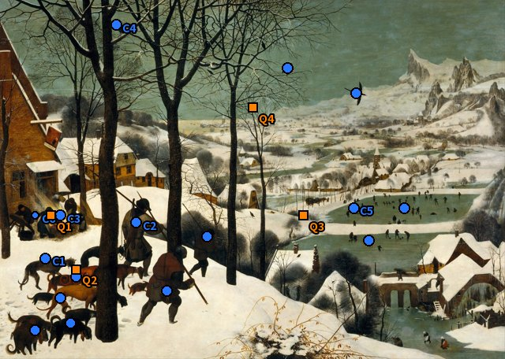
정답지 (초록 = 찾음, 빨강 = 놓침)
- C1 [필수/clustered] 사냥개 발소리와 헐떡임
- C2 [필수/clustered] 사냥꾼의 눈 밟는 발소리
- C3 [필수/point] 모닥불 타는 소리
- C4 [필수/clustered] 까마귀 울음
- C5 [필수/clustered] 스케이트 날과 아이들 웃음
- C6 [허용/point] 모닥불 곁 사람들 소리
- C7 [허용/ambient] 겨울바람
모델 출력 (초록 = 짝 있음, 파랑 = 정답지에 없지만 들릴 만함, 빨강 = 지어냄)
- Q1 불소리 fire in the foreground → C3
- Q2 개 짖음 dogs fighting → 정답지에 없지만 들릴 만함
- Q3 스케이트 소리 skaters on frozen river → C5
- Q4 바람 소리 snowy landscape → C7
위치 오차
- 모닥불 타는 소리 ↔ 불소리: 대각선의 1.6%
- 스케이트 날과 아이들 웃음 ↔ 스케이트 소리: 대각선의 8.2%
02_rainy_day — 파리의 거리, 비 오는 날 41.1초
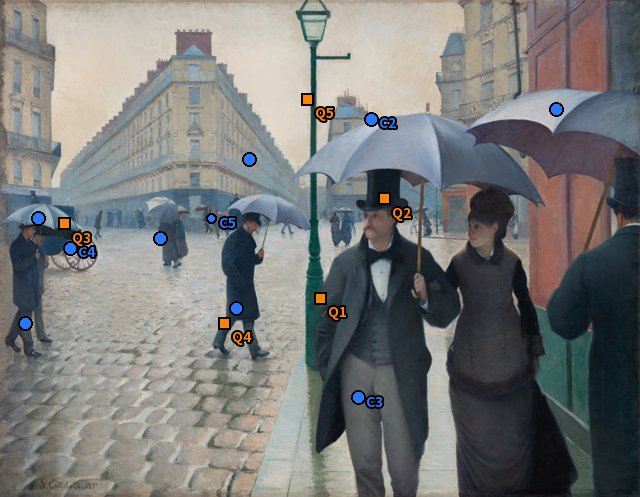
정답지 (초록 = 찾음, 빨강 = 놓침)
- C1 [필수/ambient] 빗소리
- C2 [필수/clustered] 우산에 떨어지는 빗방울
- C3 [필수/clustered] 젖은 돌길 발소리
- C4 [필수/point] 마차 바퀴와 말발굽
- C5 [허용/point] 멀리 지나가는 말
- C6 [허용/ambient] 먼 도시의 웅성임
모델 출력 (초록 = 짝 있음, 파랑 = 정답지에 없지만 들릴 만함, 빨강 = 지어냄)
- Q1 비 내리는 소리 rain falling on cobblestone street → C1
- Q2 우산 소리 man holding open umbrella → 정답지에 없지만 들릴 만함
- Q3 말차 소리 horse-drawn cart in background → C4
- Q4 걸음소리 people walking on sidewalk → C3
- Q5 등불 소리 gas street lamp → 지어냄: 소리 안 나는 물체
위치 오차
- 마차 바퀴와 말발굽 ↔ 말차 소리: 대각선의 3.2%
- 젖은 돌길 발소리 ↔ 걸음소리: 대각선의 2.4%
03_wave — 가나가와 앞바다의 거대한 파도 44.5초
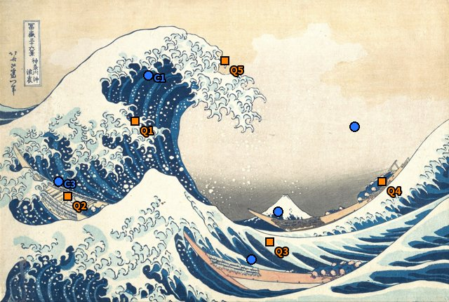
정답지 (초록 = 찾음, 빨강 = 놓침)
- C1 [필수/point] 거대한 파도 부서지는 소리
- C2 [필수/ambient] 거친 바다
- C3 [필수/clustered] 배 삐걱임과 뱃사람 외침
- C4 [허용/ambient] 바닷바람
모델 출력 (초록 = 짝 있음, 파랑 = 정답지에 없지만 들릴 만함, 빨강 = 지어냄)
- Q1 파도 소리 crashing wave → C1
- Q2 배의 삐걱거림 fishing boat → 정답지에 없지만 들릴 만함
- Q3 배의 삐걱거림 fishing boat → 정답지에 없지만 들릴 만함
- Q4 배의 삐걱거림 fishing boat → C3
- Q5 바람 소리 wind → C4
위치 오차
- 거대한 파도 부서지는 소리 ↔ 파도 소리: 대각선의 8.7%
- 배 삐걱임과 뱃사람 외침 ↔ 배의 삐걱거림: 대각선의 11.2%
04_beach — 트루빌 해변 41.9초
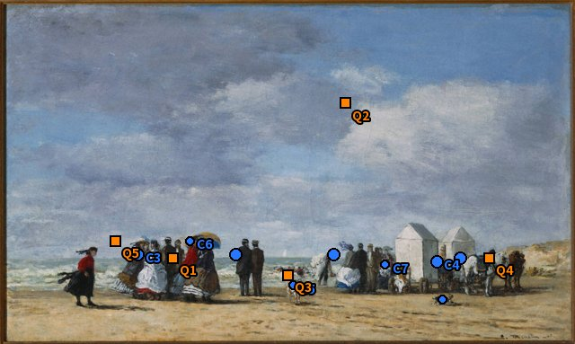
정답지 (초록 = 찾음, 빨강 = 놓침)
- C1 [필수/ambient] 파도 소리
- C2 [필수/ambient] 바닷바람
- C3 [필수/clustered] 해변 사람들의 대화
- C4 [필수/clustered] 말 울음과 말발굽
- C5 [허용/clustered] 개 짖는 소리
- C6 [허용/point] 우산 펄럭임
- C7 [허용/point] 탈의차 바퀴
모델 출력 (초록 = 짝 있음, 파랑 = 정답지에 없지만 들릴 만함, 빨강 = 지어냄)
- Q1 사람들 group of people on the beach → C3
- Q2 새소리 seagull in the sky → 지어냄: 그림에 없음
- Q3 개 짖음 dog on the sand → C5
- Q4 말 소리 horses near the carts → C4
- Q5 파도 소리 ocean waves → C1
위치 오차
- 해변 사람들의 대화 ↔ 사람들: 대각선의 5.2%
- 개 짖는 소리 ↔ 개 짖음: 대각선의 1.8%
- 말 울음과 말발굽 ↔ 말 소리: 대각선의 4.3%
05_boulevard — 몽마르트르 대로 33.2초
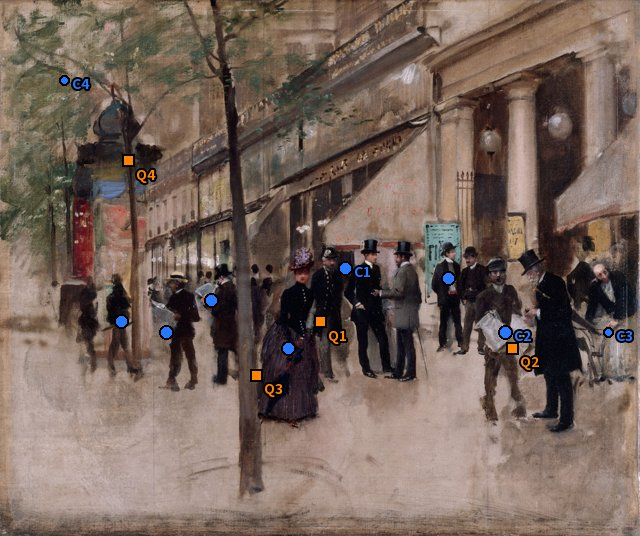
정답지 (초록 = 찾음, 빨강 = 놓침)
- C1 [필수/clustered] 거리 사람들의 대화와 발소리
- C2 [필수/point] 신문팔이 외침
- C3 [허용/point] 자전거 소리
- C4 [허용/point] 가로수 잎 바람
모델 출력 (초록 = 짝 있음, 파랑 = 정답지에 없지만 들릴 만함, 빨강 = 지어냄)
- Q1 사람들 소음 group of people standing and talking on the street → C1
- Q2 신문 소리 man holding and unfolding a newspaper → 정답지에 없지만 들릴 만함
- Q3 걸음소리 people walking on the cobblestone street → 정답지에 없지만 들릴 만함
- Q4 바람 소리 trees swaying gently in the breeze → C4
위치 오차
- 거리 사람들의 대화와 발소리 ↔ 사람들 소음: 대각선의 5.0%
- 가로수 잎 바람 ↔ 바람 소리: 대각선의 12.3%
06_ssireum — 씨름 44.0초
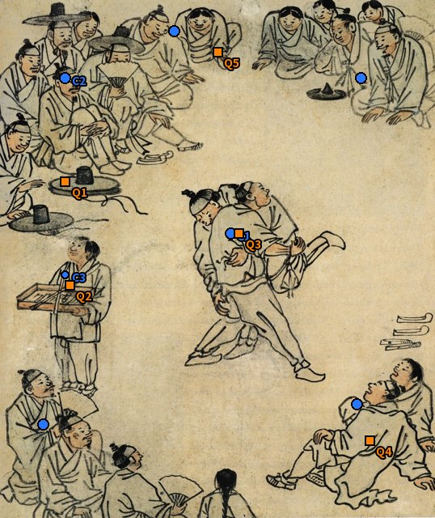
정답지 (초록 = 찾음, 빨강 = 놓침)
- C1 [필수/point] 씨름꾼 몸싸움과 기합
- C2 [필수/clustered] 구경꾼 환호와 웃음
- C3 [허용/point] 엿장수 외침
모델 출력 (초록 = 짝 있음, 파랑 = 정답지에 없지만 들릴 만함, 빨강 = 지어냄)
- Q1 고돌 떨어지는 소리 stone being placed on Go board → 지어냄: 그림에 없음
- Q2 접시 들고 걷는 소리 man carrying tray → 정답지에 없지만 들릴 만함
- Q3 남자 싸우는 소리 two men wrestling → C1
- Q4 남자 넘어지는 소리 man falling to ground → 정답지에 없지만 들릴 만함
- Q5 사람들 속삭임 group of seated men → C2
위치 오차
- 씨름꾼 몸싸움과 기합 ↔ 남자 싸우는 소리: 대각선의 1.3%
- 구경꾼 환호와 웃음 ↔ 사람들 속삭임: 대각선의 7.1%
07_seodang — 서당 39.4초
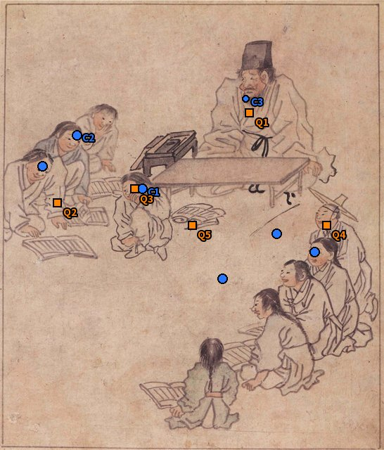
정답지 (초록 = 찾음, 빨강 = 놓침)
- C1 [필수/point] 훈장에게 혼난 아이의 훌쩍임
- C2 [필수/clustered] 아이들의 킥킥 웃음
- C3 [허용/point] 훈장의 말소리
모델 출력 (초록 = 짝 있음, 파랑 = 정답지에 없지만 들릴 만함, 빨강 = 지어냄)
- Q1 선생님 읽기 teacher reading at low table → C3
- Q2 학생들 책 넘기기 students turning pages of books → 정답지에 없지만 들릴 만함
- Q3 하품하는 학생 yawning student → 정답지에 없지만 들릴 만함
- Q4 웃는 학생 smiling student → C2
- Q5 방 소리 empty room atmosphere → 지어냄: 소리 안 나는 물체
위치 오차
- 훈장의 말소리 ↔ 선생님 읽기: 대각선의 2.4%
- 아이들의 킥킥 웃음 ↔ 웃는 학생: 대각선의 5.0%
08_mudong — 무동 41.8초
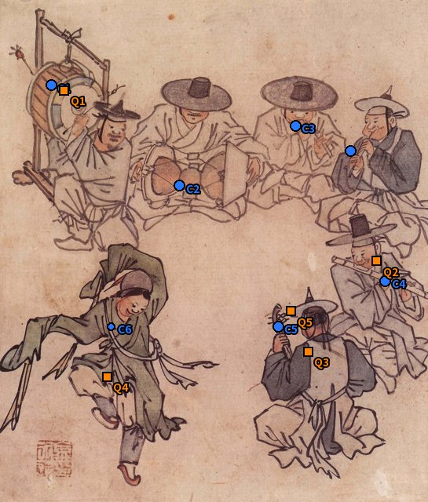
정답지 (초록 = 찾음, 빨강 = 놓침)
- C1 [필수/point] 북 소리
- C2 [필수/point] 장구 소리
- C3 [필수/clustered] 피리 소리
- C4 [필수/point] 대금 소리
- C5 [필수/point] 해금 소리
- C6 [허용/point] 춤추는 아이의 소매 휘날림과 발 구름
모델 출력 (초록 = 짝 있음, 파랑 = 정답지에 없지만 들릴 만함, 빨강 = 지어냄)
- Q1 북소리 large drum being struck → C1
- Q2 피리소리 flute being played → C3
- Q3 기타소리 guitar being strummed → 지어냄: 그림에 없음
- Q4 춤추는 소리 dancer moving energetically → C6
- Q5 새금소리 wind harp (saegeum) → 지어냄: 그림에 없음
위치 오차
- 북 소리 ↔ 북소리: 대각선의 2.1%
- 피리 소리 ↔ 피리소리: 대각선의 17.2%
- 춤추는 아이의 소매 휘날림과 발 구름 ↔ 춤추는 소리: 대각선의 7.6%
09_danopungjeong — 단오풍정 45.7초
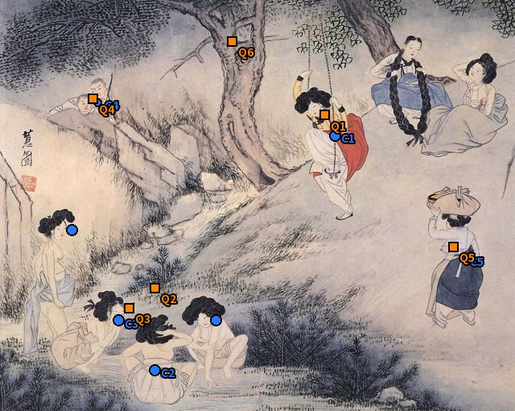
정답지 (초록 = 찾음, 빨강 = 놓침)
- C1 [필수/point] 그네 삐걱임
- C2 [필수/point] 개울물 소리
- C3 [필수/clustered] 여인들의 웃음과 물장구
- C4 [허용/point] 몰래 엿보는 아이들의 킥킥거림
- C5 [허용/point] 보따리 이고 가는 발소리
- C6 [허용/ambient] 나뭇잎 바람
모델 출력 (초록 = 짝 있음, 파랑 = 정답지에 없지만 들릴 만함, 빨강 = 지어냄)
- Q1 진자 놀이 girl on swing → C1
- Q2 물소리 stream → C2
- Q3 목욕 소리 women bathing → C3
- Q4 등반 소리 boys climbing → 정답지에 없지만 들릴 만함
- Q5 걸음소리 child walking → 지어냄: 그림에 없음
- Q6 바람 소리 trees → C6
위치 오차
- 그네 삐걱임 ↔ 진자 놀이: 대각선의 3.5%
- 개울물 소리 ↔ 물소리: 대각선의 12.5%
- 여인들의 웃음과 물장구 ↔ 목욕 소리: 대각선의 2.4%
10_inwang — 인왕제색도 33.5초
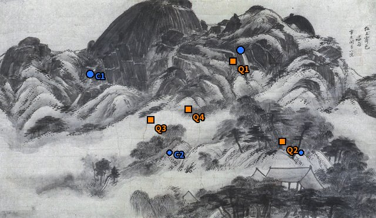
정답지 (초록 = 찾음, 빨강 = 놓침)
- C1 [필수/clustered] 비 갠 뒤 폭포 소리
- C2 [허용/clustered] 소나무 숲 바람
- C3 [허용/ambient] 비 갠 산의 물방울과 안개
모델 출력 (초록 = 짝 있음, 파랑 = 정답지에 없지만 들릴 만함, 빨강 = 지어냄)
- Q1 폭포 waterfall → C1
- Q2 바람 pine trees → C2
- Q3 새소리 bird → 지어냄: 그림에 없음
- Q4 산바람 mountain air → C3
위치 오차
- 비 갠 뒤 폭포 소리 ↔ 폭포: 대각선의 3.0%
- 소나무 숲 바람 ↔ 바람: 대각선의 5.0%
11_shower — 오하시 아타케의 소나기 33.1초
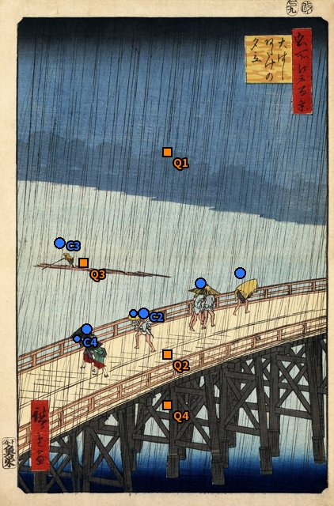
정답지 (초록 = 찾음, 빨강 = 놓침)
- C1 [필수/ambient] 소나기 빗소리
- C2 [필수/clustered] 다리 위를 뛰는 발소리
- C3 [필수/point] 뗏목 사공의 장대와 물소리
- C4 [허용/clustered] 삿갓과 우산에 떨어지는 빗방울
- C5 [허용/ambient] 강물 흐르는 소리
모델 출력 (초록 = 짝 있음, 파랑 = 정답지에 없지만 들릴 만함, 빨강 = 지어냄)
- Q1 비소리 falling rain → C1
- Q2 다리 걷는 소리 people walking on bridge → C2
- Q3 보트 노는 소리 man on bamboo raft → C3
- Q4 물소리 river water → C5
위치 오차
- 다리 위를 뛰는 발소리 ↔ 다리 걷는 소리: 대각선의 7.7%
- 뗏목 사공의 장대와 물소리 ↔ 보트 노는 소리: 대각선의 5.1%
12_kambara — 가바라 밤의 눈 35.3초
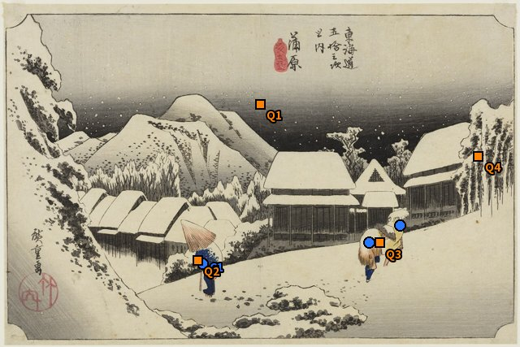
정답지 (초록 = 찾음, 빨강 = 놓침)
- C1 [필수/clustered] 눈 밟는 발소리
- C2 [허용/ambient] 고요한 눈 내리는 밤
모델 출력 (초록 = 짝 있음, 파랑 = 정답지에 없지만 들릴 만함, 빨강 = 지어냄)
- Q1 눈 내리기 falling snow → C2
- Q2 걷는 사람 person walking with straw hat → C1
- Q3 대나무 운반 person carrying bamboo pole → 지어냄: 그림에 없음
- Q4 바람 소리 snow-covered trees → 정답지에 없지만 들릴 만함
위치 오차
- 눈 밟는 발소리 ↔ 걷는 사람: 대각선의 1.0%
13_qingming — 청명상하도 (무지개다리 부분) 43.3초
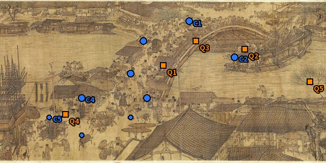
정답지 (초록 = 찾음, 빨강 = 놓침)
- C1 [필수/clustered] 다리 위 군중의 웅성임
- C2 [필수/point] 다리 밑 배의 사공들 외침
- C3 [필수/ambient] 강물 소리
- C4 [필수/clustered] 시장 상인들의 호객
- C5 [허용/clustered] 수레와 짐승 소리
모델 출력 (초록 = 짝 있음, 파랑 = 정답지에 없지만 들릴 만함, 빨강 = 지어냄)
- Q1 사람 소음 crowd of people walking and gathering → 정답지에 없지만 들릴 만함
- Q2 배 소리 boats on the river → C2
- Q3 다리 사람 소리 people crossing the arched bridge → C1
- Q4 시장 소리 stalls and vendors in the foreground → C4
- Q5 바람 소리 bare trees on the right → 정답지에 없지만 들릴 만함
위치 오차
- 다리 밑 배의 사공들 외침 ↔ 배 소리: 대각선의 3.5%
- 다리 위 군중의 웅성임 ↔ 다리 사람 소리: 대각선의 5.7%
- 시장 상인들의 호객 ↔ 시장 소리: 대각선의 6.3%
14_tage — 답가도 (부분) 30.5초
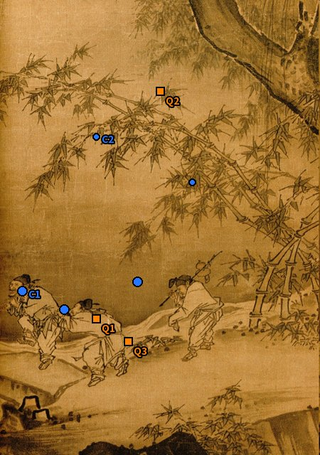
정답지 (초록 = 찾음, 빨강 = 놓침)
- C1 [필수/clustered] 농부들의 노래·웃음과 발 구르기
- C2 [허용/clustered] 대나무 잎 바람
모델 출력 (초록 = 짝 있음, 파랑 = 정답지에 없지만 들릴 만함, 빨강 = 지어냄)
- Q1 등산하는 사람들 three men climbing bamboo stalks → 정답지에 없지만 들릴 만함
- Q2 바람에 흔들리는 죽 bamboo branches swaying in wind → C2
- Q3 바위 위 발소리 men stepping on rocky ground → 정답지에 없지만 들릴 만함
위치 오차
- 대나무 잎 바람 ↔ 바람에 흔들리는 죽: 대각선의 14.1%
15_galette — 물랭 드 라 갈레트의 무도회 45.6초
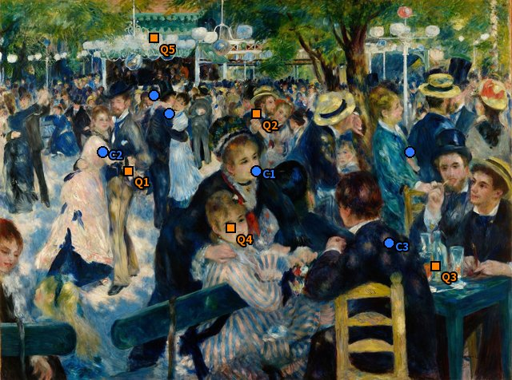
정답지 (초록 = 찾음, 빨강 = 놓침)
- C1 [필수/clustered] 사람들의 대화와 웃음
- C2 [필수/clustered] 춤추는 발소리
- C3 [필수/point] 잔 부딪히는 소리
- C4 [허용/ambient] 야외 무도회 음악
- C5 [허용/ambient] 나뭇잎 바람
모델 출력 (초록 = 짝 있음, 파랑 = 정답지에 없지만 들릴 만함, 빨강 = 지어냄)
- Q1 왈츠 waltzing couple in foreground → C4
- Q2 인파 소음 crowd of people in background → C1
- Q3 잔 부딪힘 drinking man at table → C3
- Q4 선풍 소리 woman holding fan → 지어냄: 그림에 없음
- Q5 등 흔들림 chandelier above dance floor → 지어냄: 소리 안 나는 물체
위치 오차
- 사람들의 대화와 웃음 ↔ 인파 소음: 대각선의 8.9%
- 잔 부딪히는 소리 ↔ 잔 부딪힘: 대각선의 8.1%
16_horsefair — 말 시장 31.5초
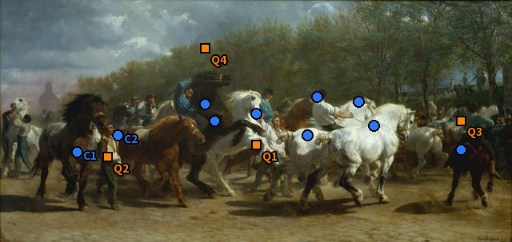
정답지 (초록 = 찾음, 빨강 = 놓침)
- C1 [필수/clustered] 말발굽과 말 울음
- C2 [필수/clustered] 마부들의 고함
- C3 [허용/ambient] 장터 사람들 웅성임
모델 출력 (초록 = 짝 있음, 파랑 = 정답지에 없지만 들릴 만함, 빨강 = 지어냄)
- Q1 말소리 galloping horses → C1
- Q2 крик man shouting → C2
- Q3 소란 crowd of people → C3
- Q4 바람 trees and sky → 정답지에 없지만 들릴 만함
위치 오차
- 말발굽과 말 울음 ↔ 말소리: 대각선의 8.4%
- 마부들의 고함 ↔ крик: 대각선의 4.3%
17_rainsteam — 비, 증기, 속도 26.2초
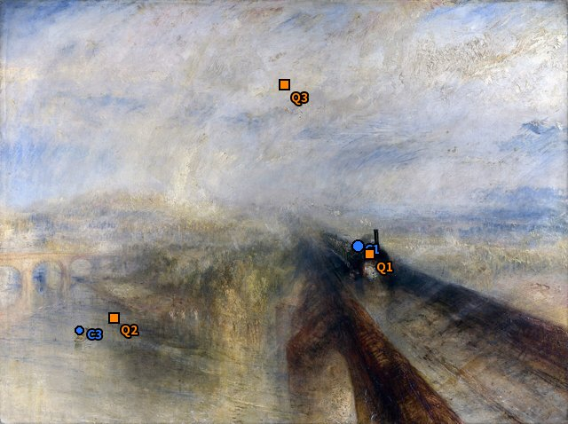
정답지 (초록 = 찾음, 빨강 = 놓침)
- C1 [필수/point] 증기기관차 소리와 기적
- C2 [필수/ambient] 비바람
- C3 [허용/point] 강 위 작은 배
모델 출력 (초록 = 짝 있음, 파랑 = 정답지에 없지만 들릴 만함, 빨강 = 지어냄)
- Q1 증기기관차 steam locomotive → C1
- Q2 강물 river → 정답지에 없지만 들릴 만함
- Q3 비 rain → C2
위치 오차
- 증기기관차 소리와 기적 ↔ 증기기관차: 대각선의 2.0%
18_milkmaid — 우유 따르는 여인 (함정: 조용한 실내) 20.4초
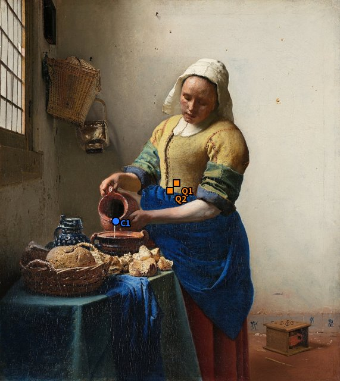
정답지 (초록 = 찾음, 빨강 = 놓침)
모델 출력 (초록 = 짝 있음, 파랑 = 정답지에 없지만 들릴 만함, 빨강 = 지어냄)
- Q1 우유 부는 소리 woman pouring milk from jug → C1
- Q2 방의 정적 interior room space → 지어냄: 소리 안 나는 물체
위치 오차
- 우유 따르는 소리 ↔ 우유 부는 소리: 대각선의 14.1%
19_peasantwedding — 농민의 결혼식 43.7초
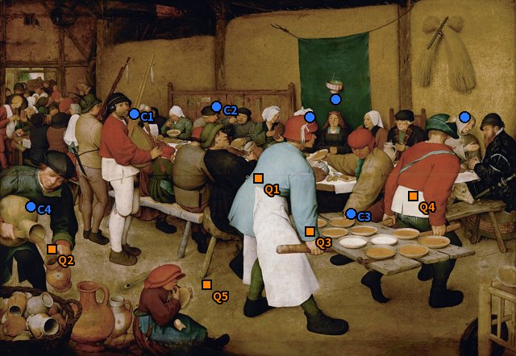
정답지 (초록 = 찾음, 빨강 = 놓침)
- C1 [필수/point] 백파이프 연주
- C2 [필수/clustered] 잔치 사람들의 대화와 웃음
- C3 [필수/clustered] 그릇과 숟가락 소리
- C4 [필수/point] 술 따르는 소리
모델 출력 (초록 = 짝 있음, 파랑 = 정답지에 없지만 들릴 만함, 빨강 = 지어냄)
- Q1 사람들 소란 crowd of people talking and eating → C2
- Q2 술 따는 소리 man pouring wine from jug into cup → C4
- Q3 북 치는 소리 man playing drum on table → 지어냄: 그림에 없음
- Q4 칼 자르는 소리 man cutting meat with knife → 지어냄: 그림에 없음
- Q5 걸음 소리 people walking across floor → 정답지에 없지만 들릴 만함
위치 오차
- 잔치 사람들의 대화와 웃음 ↔ 사람들 소란: 대각선의 13.1%
- 술 따르는 소리 ↔ 술 따는 소리: 대각선의 7.6%
20_pearl — 진주 귀고리를 한 소녀 (함정: 초상) 19.9초
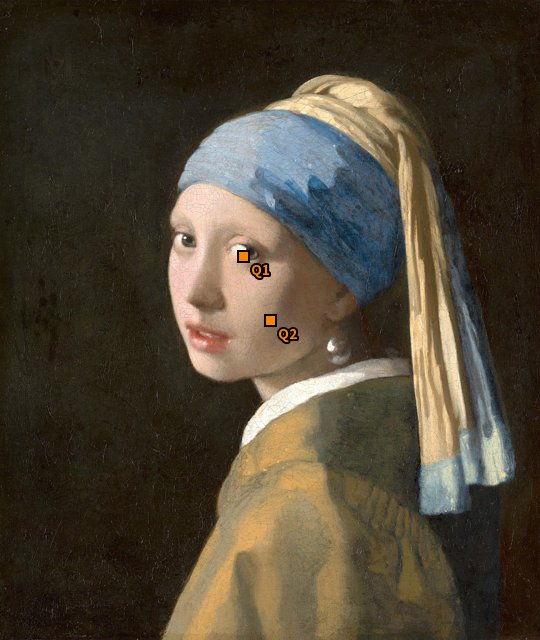
정답지 (초록 = 찾음, 빨강 = 놓침)
모델 출력 (초록 = 짝 있음, 파랑 = 정답지에 없지만 들릴 만함, 빨강 = 지어냄)
- Q1 머리 돌리기 girl turning her head → 정답지에 없지만 들릴 만함
- Q2 실내 소리 dark interior space → 지어냄: 소리 안 나는 물체
위치 오차
21_snapwhip — 채찍 놀이 34.4초
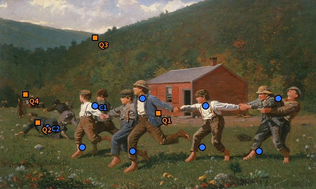
정답지 (초록 = 찾음, 빨강 = 놓침)
- C1 [필수/clustered] 아이들 함성과 달리는 발소리
- C2 [허용/point] 넘어진 아이들
- C3 [허용/ambient] 산골 바람과 새소리
모델 출력 (초록 = 짝 있음, 파랑 = 정답지에 없지만 들릴 만함, 빨강 = 지어냄)
- Q1 달리는 소년들 group of barefoot boys running hand-in-hand → C1
- Q2 넘어가는 소년 boy falling to the ground → C2
- Q3 바람 소리 trees on the hillside → C3
- Q4 악기 소리 people playing instruments in background → 지어냄: 그림에 없음
위치 오차
- 아이들 함성과 달리는 발소리 ↔ 달리는 소년들: 대각선의 5.9%
- 넘어진 아이들 ↔ 넘어가는 소년: 대각선의 2.8%
22_liverpool — 달빛 속 리버풀 부두 44.4초
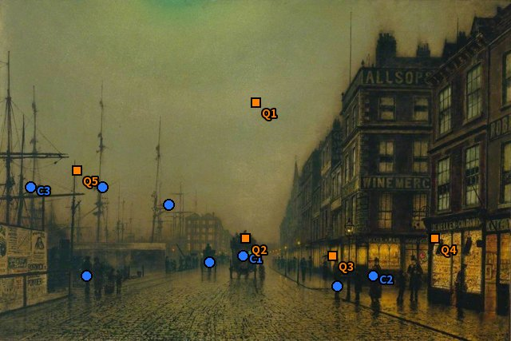
정답지 (초록 = 찾음, 빨강 = 놓침)
- C1 [필수/point] 마차 바퀴와 말발굽
- C2 [필수/clustered] 젖은 보도의 발소리
- C3 [필수/clustered] 항구의 배 삐걱임과 밧줄
- C4 [허용/ambient] 밤거리 비 내린 뒤 물소리
모델 출력 (초록 = 짝 있음, 파랑 = 정답지에 없지만 들릴 만함, 빨강 = 지어냄)
- Q1 안개 misty atmosphere over the street and river → 지어냄: 소리 안 나는 물체
- Q2 마차 horse-drawn carriage moving down the street → C1
- Q3 보행자 people walking on the wet street → C2
- Q4 가게 조명 illuminated shop windows on the right → 지어냄: 소리 안 나는 물체
- Q5 배 sailboats with masts on the left riverbank → C3
위치 오차
- 마차 바퀴와 말발굽 ↔ 마차: 대각선의 2.8%
- 젖은 보도의 발소리 ↔ 보행자: 대각선의 5.1%
- 항구의 배 삐걱임과 밧줄 ↔ 배: 대각선의 5.0%
23_tuileries — 튈르리 공원의 음악회 33.9초
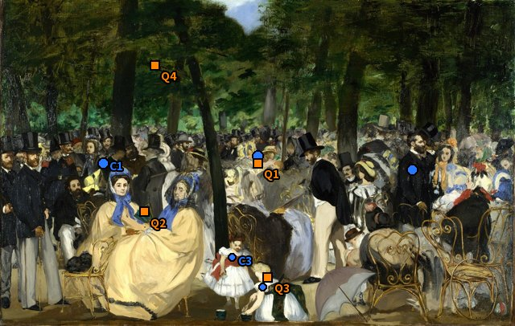
정답지 (초록 = 찾음, 빨강 = 놓침)
- C1 [필수/clustered] 공원의 사람들 대화
- C2 [필수/ambient] 야외 음악회
- C3 [허용/clustered] 아이들 노는 소리
- C4 [허용/ambient] 나뭇잎 바람
모델 출력 (초록 = 짝 있음, 파랑 = 정답지에 없지만 들릴 만함, 빨강 = 지어냄)
- Q1 인파 소음 crowd of people talking → C1
- Q2 선풍 소리 woman holding a fan → 정답지에 없지만 들릴 만함
- Q3 아이들 놀음 two small children playing → C3
- Q4 바람 소리 trees in background → C4
위치 오차
- 공원의 사람들 대화 ↔ 인파 소음: 대각선의 1.1%
- 아이들 노는 소리 ↔ 아이들 놀음: 대각선의 1.8%
24_avercamp — 스케이트 타는 사람들이 있는 겨울 풍경 (부분) 44.6초
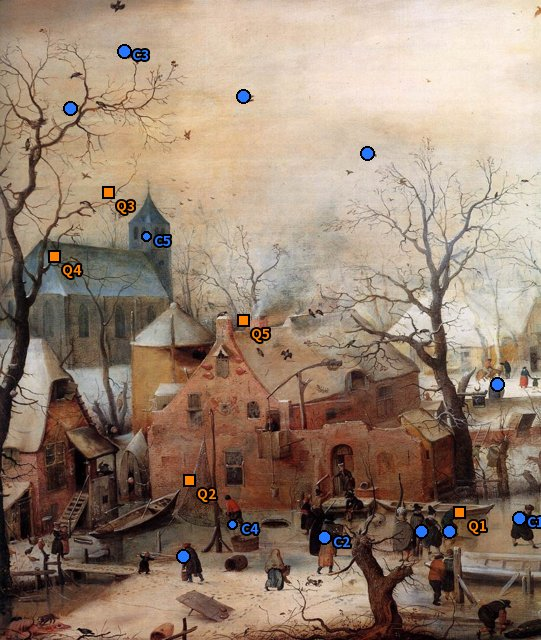
정답지 (초록 = 찾음, 빨강 = 놓침)
- C1 [필수/clustered] 스케이트와 얼음 소리
- C2 [필수/clustered] 마을 사람들 소리
- C3 [필수/clustered] 새소리
- C4 [허용/point] 얼음 구멍에서 물 긷는 소리
- C5 [허용/point] 교회 종소리
모델 출력 (초록 = 짝 있음, 파랑 = 정답지에 없지만 들릴 만함, 빨강 = 지어냄)
- Q1 얼음 스케이트 people skating on frozen canal → C1
- Q2 새 잡는 그물 man holding net near water → 지어냄: 그림에 없음
- Q3 종소리 church bell tower → C5
- Q4 바람 소리 bare winter trees → 정답지에 없지만 들릴 만함
- Q5 불길 소리 chimney with smoke rising → 정답지에 없지만 들릴 만함
위치 오차
- 스케이트와 얼음 소리 ↔ 얼음 스케이트: 대각선의 2.6%
- 교회 종소리 ↔ 종소리: 대각선의 7.0%
25_bargehaulers — 볼가강의 배 끄는 인부들 37.3초
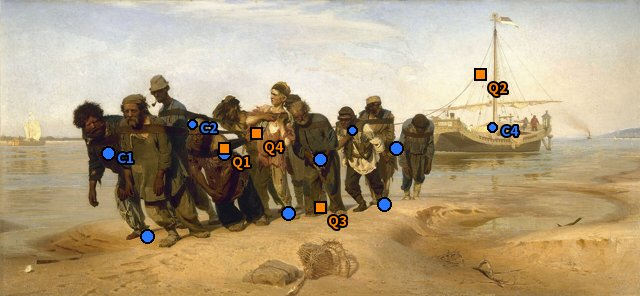
정답지 (초록 = 찾음, 빨강 = 놓침)
- C1 [필수/clustered] 인부들의 신음과 무거운 발소리
- C2 [허용/clustered] 밧줄 당기는 삐걱임
- C3 [필수/ambient] 강물과 바람
- C4 [허용/point] 범선 삐걱임
모델 출력 (초록 = 짝 있음, 파랑 = 정답지에 없지만 들릴 만함, 빨강 = 지어냄)
- Q1 물고기 잡는 소리 group of fishermen pulling a net on the shore → C1
- Q2 배의汽笛 소리 sailboat in the distance with a small flag → 정답지에 없지만 들릴 만함
- Q3 파도 소리 calm sea water near shore → C3
- Q4 바람 소리 breezy air moving hats and clothes → 정답지에 없지만 들릴 만함
위치 오차
- 인부들의 신음과 무거운 발소리 ↔ 물고기 잡는 소리: 대각선의 0.8%
26_ironmill — 철 압연 공장 42.0초
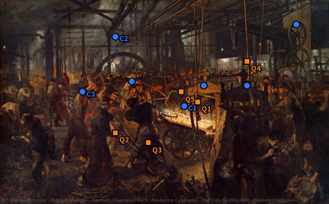
정답지 (초록 = 찾음, 빨강 = 놓침)
- C1 [필수/point] 달군 쇠를 끄는 금속 소리와 지글거림
- C2 [필수/clustered] 기계 바퀴와 압연기 굉음
- C3 [필수/clustered] 노동자들의 고함
모델 출력 (초록 = 짝 있음, 파랑 = 정답지에 없지만 들릴 만함, 빨강 = 지어냄)
- Q1 철제롤링 rolling mill machinery → C2
- Q2 망치치기 worker swinging hammer → 지어냄: 그림에 없음
- Q3 노동자소음 crowd of workers → C3
- Q4 증기휘istle steam pipe or valve → 정답지에 없지만 들릴 만함
- Q5 불소음 glowing furnace → 정답지에 없지만 들릴 만함
위치 오차
- 기계 바퀴와 압연기 굉음 ↔ 철제롤링: 대각선의 4.5%
- 노동자들의 고함 ↔ 노동자소음: 대각선의 16.4%
27_merryfamily — 즐거운 가족 48.0초
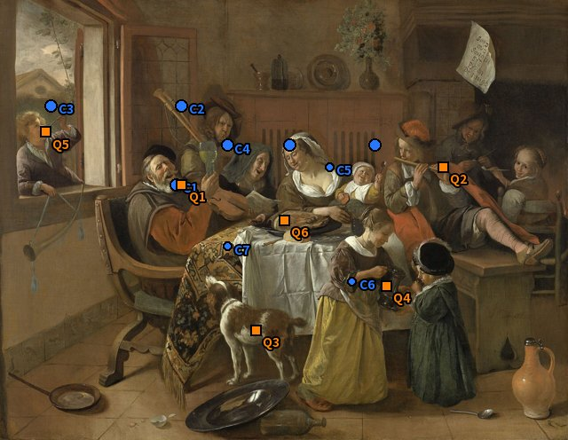
정답지 (초록 = 찾음, 빨강 = 놓침)
- C1 [필수/point] 바이올린 연주
- C2 [필수/point] 백파이프 소리
- C3 [필수/clustered] 피리 부는 아이들
- C4 [필수/clustered] 가족의 노래
- C5 [허용/point] 아기 소리
- C6 [허용/point] 술 따르는 소리
- C7 [허용/point] 개 소리
모델 출력 (초록 = 짝 있음, 파랑 = 정답지에 없지만 들릴 만함, 빨강 = 지어냄)
- Q1 루트 연주 man playing lute → 지어냄: 그림에 없음
- Q2 플루트 소리 boy playing flute → C3
- Q3 개 짖음 dog standing near table → C7
- Q4 술 부는 소리 girl pouring wine from jug → C6
- Q5 호각 소리 boy at window with horn → 정답지에 없지만 들릴 만함
- Q6 방 소리 interior room space → 지어냄: 소리 안 나는 물체
위치 오차
- 피리 부는 아이들 ↔ 플루트 소리: 대각선의 10.0%
- 개 소리 ↔ 개 짖음: 대각선의 12.3%
- 술 따르는 소리 ↔ 술 부는 소리: 대각선의 4.8%
28_railwaystation — 기차역 41.3초
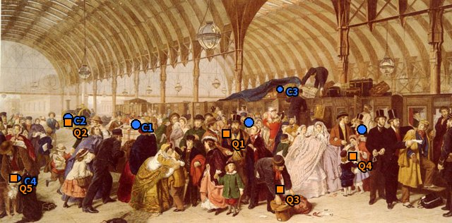
정답지 (초록 = 찾음, 빨강 = 놓침)
- C1 [필수/clustered] 역 군중의 웅성임
- C2 [필수/point] 증기기관차
- C3 [허용/point] 짐 싣는 소리
- C4 [허용/point] 개 짖는 소리
- C5 [허용/ambient] 역 지붕 아래 울림
모델 출력 (초록 = 짝 있음, 파랑 = 정답지에 없지만 들릴 만함, 빨강 = 지어냄)
- Q1 인파 소음 crowd of people → C1
- Q2 기차 소리 steam train → C2
- Q3 가방 떨어지는 소리 man dropping suitcase → 정답지에 없지만 들릴 만함
- Q4 아이 울음소리 crying child → 정답지에 없지만 들릴 만함
- Q5 개 짖는 소리 dog → C4
위치 오차
- 역 군중의 웅성임 ↔ 인파 소음: 대각선의 5.0%
- 증기기관차 ↔ 기차 소리: 대각선의 0.9%
- 개 짖는 소리 ↔ 개 짖는 소리: 대각선의 0.9%
29_ninthwave — 아홉 번째 파도 25.6초
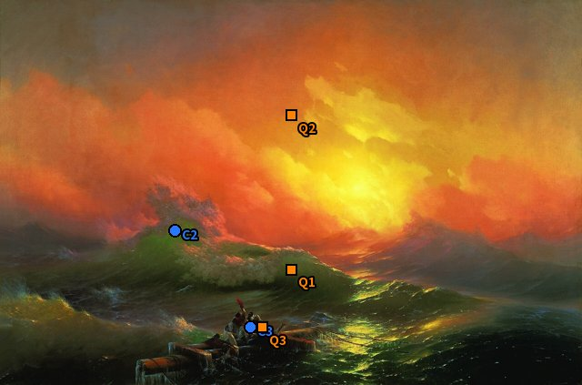
정답지 (초록 = 찾음, 빨강 = 놓침)
- C1 [필수/ambient] 폭풍 바다
- C2 [필수/point] 거대한 파도 부서짐
- C3 [필수/point] 난파된 사람들의 외침
- C4 [허용/ambient] 폭풍 바람
모델 출력 (초록 = 짝 있음, 파랑 = 정답지에 없지만 들릴 만함, 빨강 = 지어냄)
- Q1 거친 파도 churning ocean waves → C1
- Q2 바람 소리 stormy sky and wind → C4
- Q3 кричащие моряки people in a small boat → C3
위치 오차
- 난파된 사람들의 외침 ↔ кричащие моряки: 대각선의 1.7%
30_stilllife — 금박 잔이 있는 정물 (함정: 정물) 25.8초
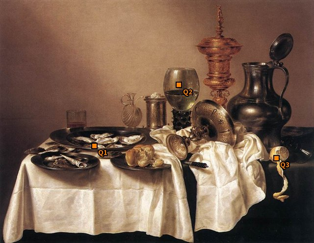
정답지 (초록 = 찾음, 빨강 = 놓침)
모델 출력 (초록 = 짝 있음, 파랑 = 정답지에 없지만 들릴 만함, 빨강 = 지어냄)
- Q1 굴 쾅 oyster platter → 지어냄: 소리 안 나는 물체
- Q2 잔 부딪치기 wine glass → 지어냄: 소리 안 나는 물체
- Q3 레몬 짜기 lemon peel → 지어냄: 소리 안 나는 물체
위치 오차